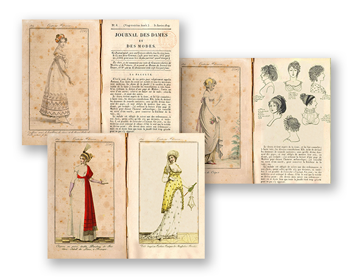

Histoire au Quotidien I 2015

Réinterprétation d'un journal de mode
des années 1790 et créations de quelques animations intégrées dans le programme "L’Histoire au Quotidien" diffusé sur M6
en septembre 2015.
Réinterprétation d'un journal de mode
des années 1790 et créations de quelques animations intégrées dans le programme "L’Histoire au Quotidien" diffusé sur M6
en septembre 2015.